津軽賽の河原巡り/青森県
青森県である。津軽である。
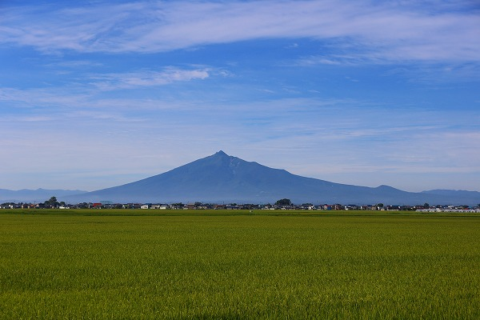
津軽といえば
…化粧地蔵、オシラサマ、赤倉霊場、川倉賽の河原地蔵尊、高山稲荷…
これまで様々な民間信仰シーンを見てきたが、印象的だったのはこの地が死者供養の習俗が実に多い事。
特に地蔵信仰を中心とした死者供養の習俗に津軽の人達の死生観や宗教観が色濃く反映されているように思える。
そんな地蔵信仰の集積地が津軽各所に点在する賽の河原だ。
というわけで、津軽の死者供養の諸相を色々巡ってみました。
寄り道もありますが、お付き合いくださいまし。
最初に訪れたのは川倉賽の河原地蔵尊。
以前単独でレポートした場所だが、津軽の死者供養を語るうえでどうしても欠かせない存在なので改めて紹介させていただく。
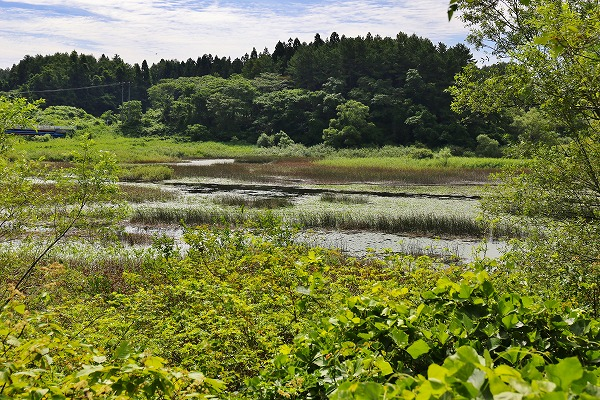
川倉賽の河原地蔵尊は旧金木町（現五所川原市）にある。
下北の恐山、津軽の川倉、と並び称されるほどメジャーな死者供養の霊場である。
実際に青森を旅していると実感する事だが、下北というのは恐山のイメージが強烈なので死者供養とか地蔵信仰が盛んかと思いがちだが、実際には津軽地方の方がはるかにその信仰の度合いが高く、深い。
その中でも、特に濃密な死者供養を体現しているのが、ここ川倉賽の河原地蔵尊といえよう。
太宰治の故郷、金木にほど近い川倉賽の河原地蔵尊は芦野湖に面しており、周囲にはキャンプ場や公園などがある。
賽の河原、といえば川のほとりに小石が積まれたような寂しい光景を想像しがちだが、津軽の賽の河原はどちらかというと地蔵の集積所、といった感じだ。
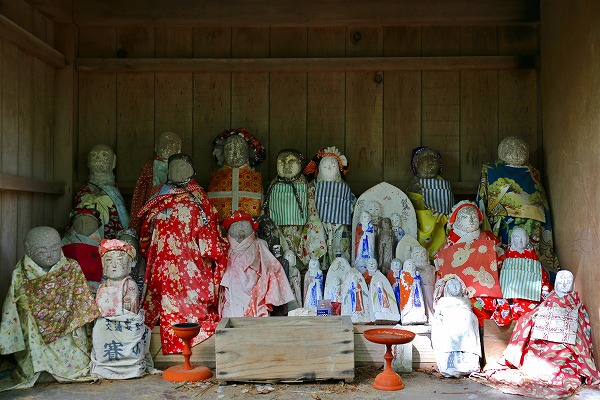
以前にもお伝えしたが、この地方の地蔵はその多くが化粧をして着物をまとっている。
その理由は後述するが、これだけの数のお地蔵さんが白い顔で派手な着物を着ていると、他所から来た人間からすると何度見てもギョッとするものだ。
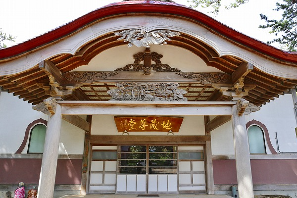
地蔵堂。
近在の方々によって管理されている。
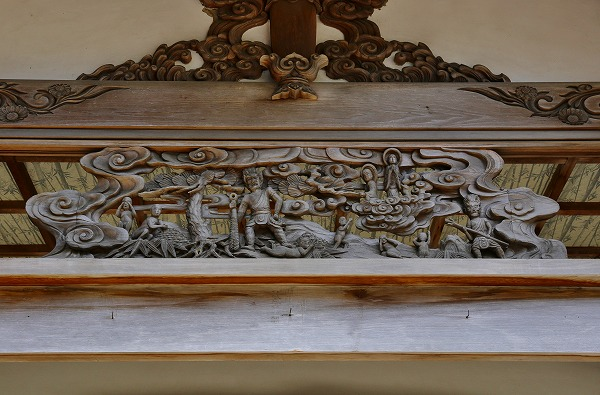
見上げれば賽の河原の様子を表した彫り物が。
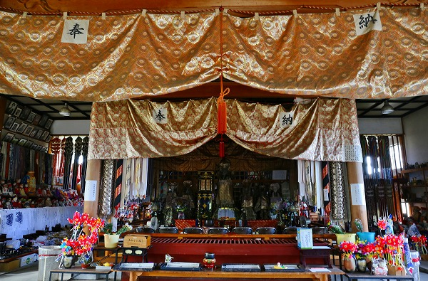
中に入ると突然濃密な空気に包まれる。
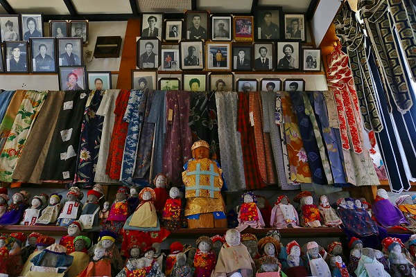
死者を供養するための様々な奉納物が所狭しとひしめいている。
風車、遺影、着物、玩具、手拭…様々な奉納物が所狭しと並んでいるのだ。
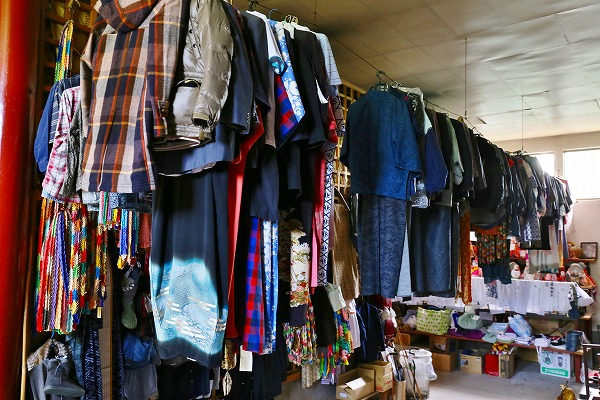
特に印象的だったのが大量の着物。
死者があの世で寒い思いをしないように、という願いからなのだろうか。
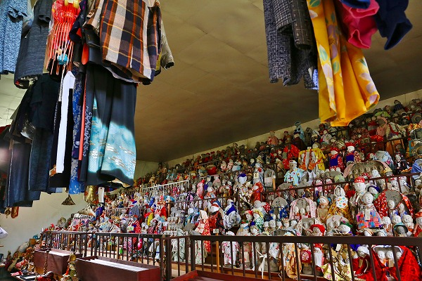
その先には大量のお地蔵さん。
ひな壇状に並んだ大量の地蔵は皆着物を着ており、顔には化粧が施されている。
これは奉納者が自分が奉納した地蔵が一目で判るように、という理由からだという。
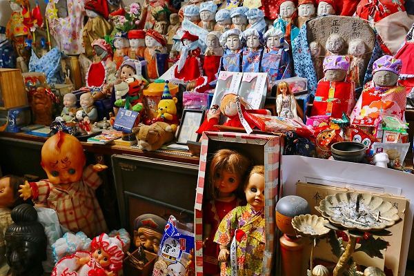
この地方ではかつては子供が亡くなると遺族が子の供養のために地蔵を一体奉納したのだという。
つまり子供一人に一地蔵。
そして命日や大祭になると親は奉納した地蔵に菓子や玩具を奉納して冥福を祈るのだ。
そういえば津軽を歩いていると路傍に化粧された地蔵をよく見かける。しかも大量に。
そうか。あれは皆亡くなった子供の供養のために奉納してあったのだな。
何とも切ない話ではないか。
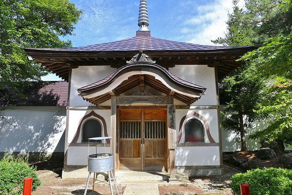
さて、川倉賽の河原には本堂である地蔵堂とは別にもうひとつお堂がある。
扉を開けて中にお邪魔すると…
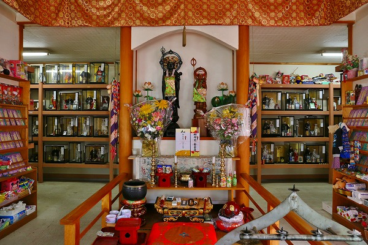
そこには大量の人形が祀られている。
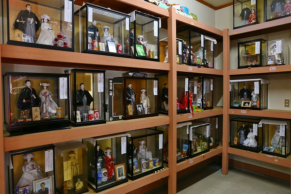
すべて婚礼人形だ。
これは未婚で亡くなった子供のためにあの世で結婚式を挙げている様子を想像して親が奉納する人形なのだ。
山形県で見られるムカサリ絵馬の人形バージョンだ。
さらに言えば亡き子の供養のために地蔵を奉納する習俗の現代版なのだ。
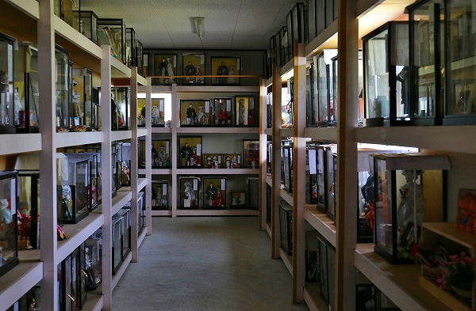
人形が納められた建物は延々と続く。
あまりにも人形が増え過ぎたので増築したのだとか。
先ほどの地蔵堂の混沌とした雰囲気とは打って変わって整然とした雰囲気だ。
それでも薄暗い堂内で大量の人形と対峙していると押しつぶされそうな気になってくる。
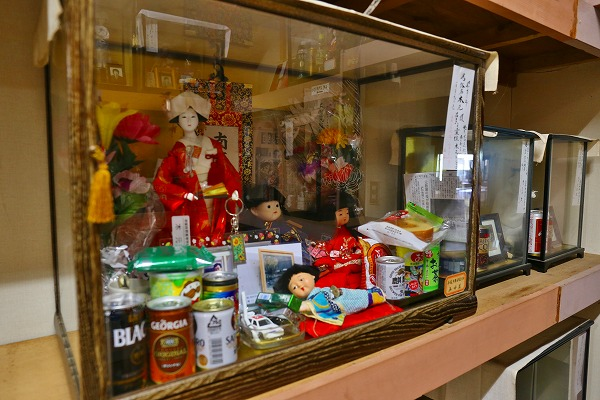
人形には思い思いのものが添えられている。
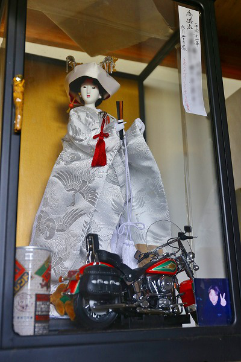
花嫁人形とバイクの組み合わせがシュールだ。
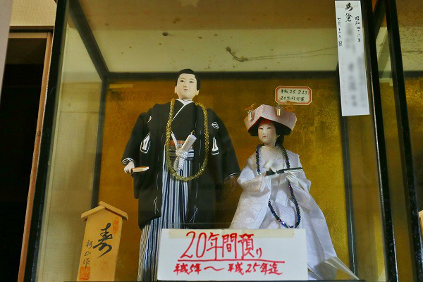
人形の預かりは数年ごとに更新される。
更新すればまた数年、この堂内で無言の結婚式を挙げ続けられる、という訳だ。
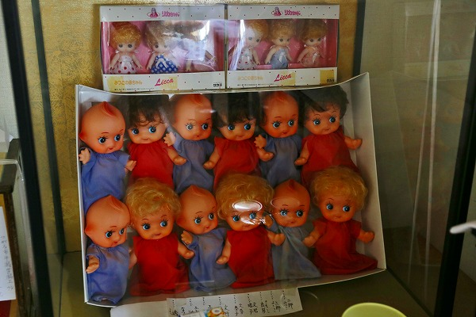
最近は既成の人形の奉納も多い。
これはあの世の友達、という意味合いだと思われる。
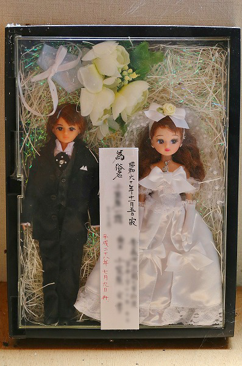
勿論リカちゃん人形の奉納も。
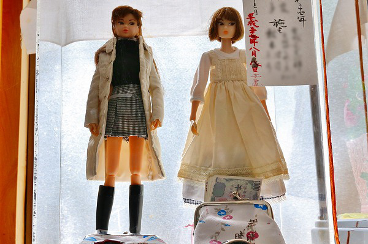
そしてギャル風の人形も。
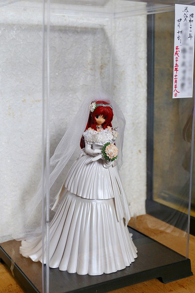
いつか出現するだろうなあ、と思っていたがやはりフィギュアが奉納されるようになった。
現象は様々だが、地蔵を奉納していた頃もフィギュアを奉納している現代も子を想う親の気持ちは変わらないはずである。
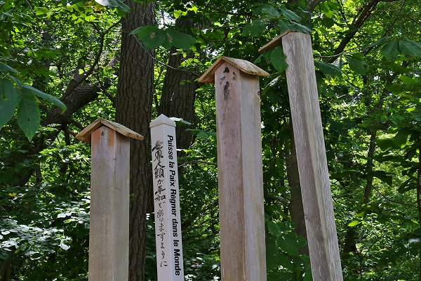
地蔵堂の脇には大きな角塔婆が並んでいた。あ、ピースポールも混ざってる。
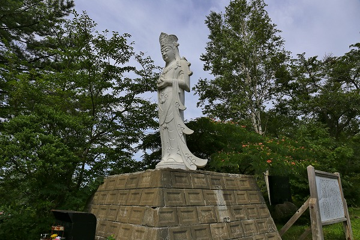
境内には何故か埼玉の鳥居観音のミニチュアが設置されていた。
何でも、ここの講中が鳥居観音に参拝したのを機に原型から作ったものだとか。
建立は昭和５０年。鳥居観音建立が昭和４６年だから、かなり早い時期に建立されたことになる。
次に訪れたのは川倉から南下して、弘前市にある三世寺館跡。
ここも賽の河原だという。
鎌倉末期に館があったという場所で、行ってみると見晴らしのいい高台だった。
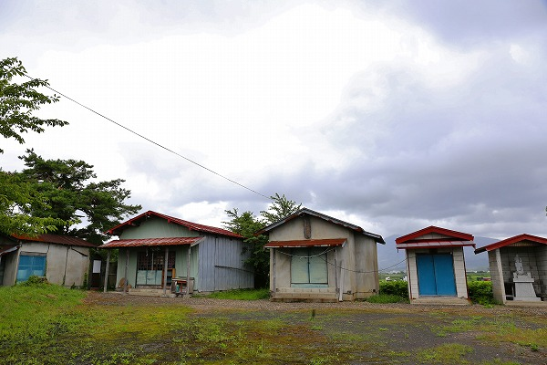
高台には数棟のお堂が並んでいた。
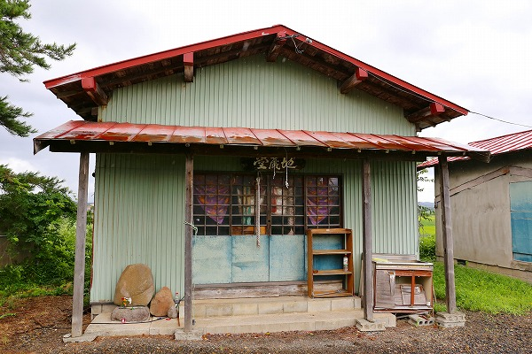
そのうちのひとつ地蔵堂。
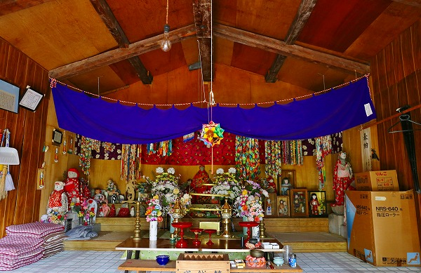
中に入ってみると簡素な造りのお堂だが濃密な信仰の場であった。
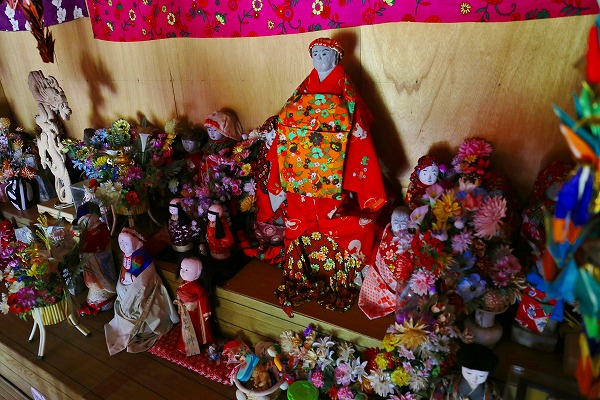
中央にお地蔵さんの石像が祀られており、その周辺にもたくさんのお地蔵さんが安置されていた。
先程の川倉同様、みな着物を身に着け、顔に化粧を施している。
やはりここでも奉納した家族がマイ地蔵を判別し易くするために目立つ派手な着物を身に着けているのだろう。
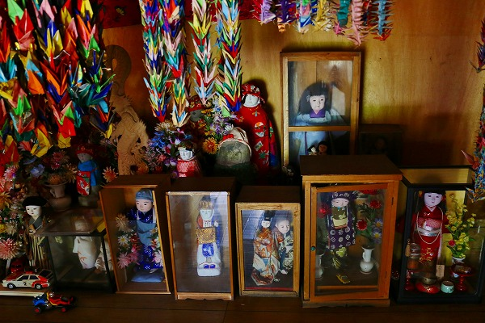
お地蔵さんの傍らにはガラスケースに納まった人形がずらり。
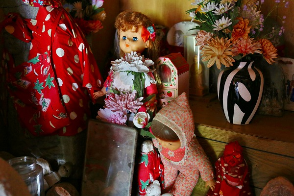
人形は婚礼人形ではなく、女児が遊びで使うような市松人形や玩具の人形だった。
奉納の時期を考えると亡くなった子の供養のために奉納されたのは、最初が地蔵の石像であり、その後玩具の人形、そして婚礼人形、さらにフィギュア人形、という変遷を辿って行ったのではなかろうか。
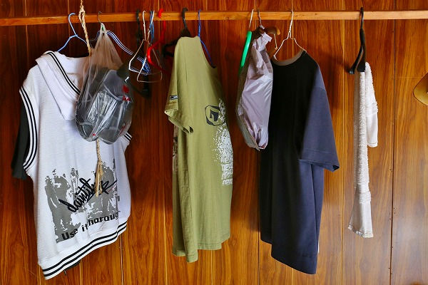
私物なのか。それとも亡くなった人への供物なのか、良く判らない衣類が掛けてあった。
次に向かったのは今泉賽の河原。
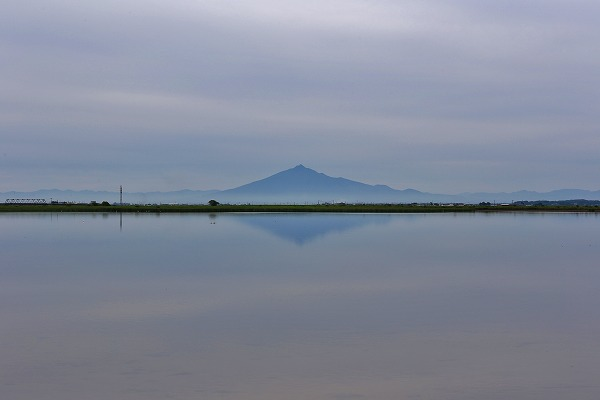
目の前は十三湖、その向こうに岩木山が見える。
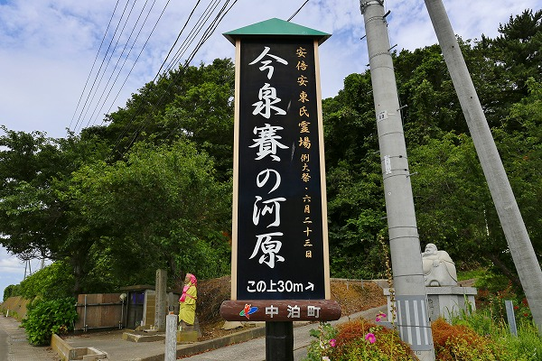
立派な看板が立っており、迷うこともなく賽の河原へ。
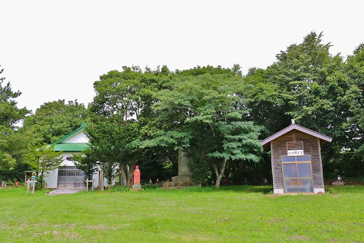
広場のような場所にメインの地蔵堂と小さな観音堂が建っている。
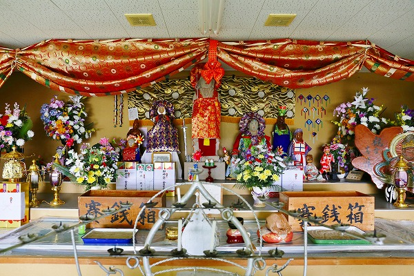
地蔵堂の内部。
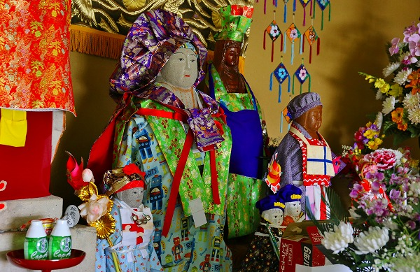
中央に地蔵の石像が立ち、その両脇に数体の地蔵が並ぶのは先ほどの三世寺館跡の地蔵堂とよく似ている。
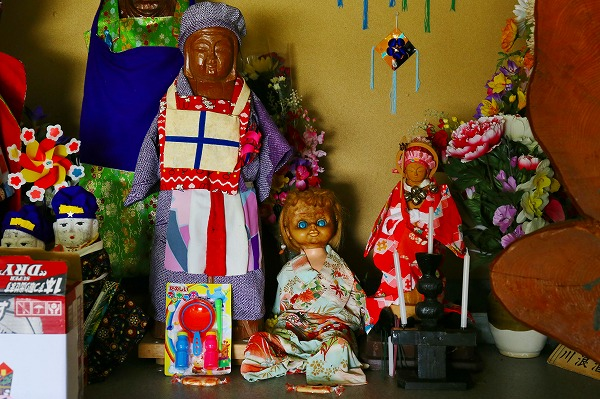
さらに人形や玩具。
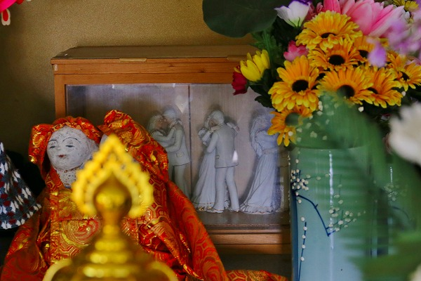
隅に男女がダンスをしている人形があった。
これも婚礼人形の一種なのだろうか。
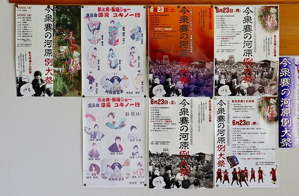
壁には過去に行われた大祭のチラシが貼られていた。
前夜祭に始まり、歌謡ショーや中学生の吹奏楽演奏、カラオケ大会、よさこいソーランなどかなりド派手な祭りのようだ。
恐山の大祭などと比べると娯楽要素満載の祭りだね。
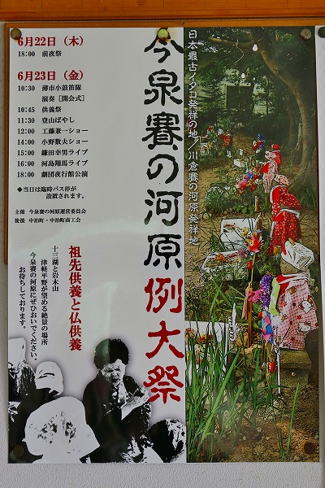
そのうちの一枚。
着目すべきは日本最古イタコ発祥の地/川倉賽の河原発祥地とある。
真偽のほどは確認しようもないが、もし本当だとしたらここが津軽の死者供養の震源地という事になろう。
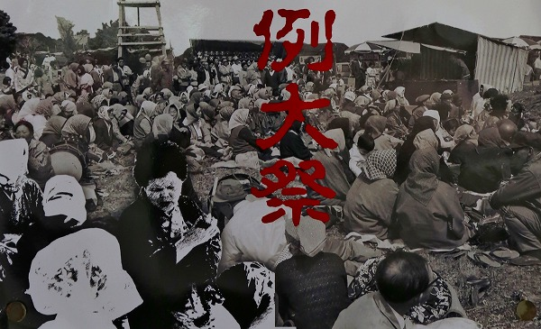
俄かには信じられないが、↑のチラシを見る限り凄い人出だ。
コラージュされているのはイタコさんだろうか。
なんか凄いコラージュのセンスだなあ。勢いありすぎ。
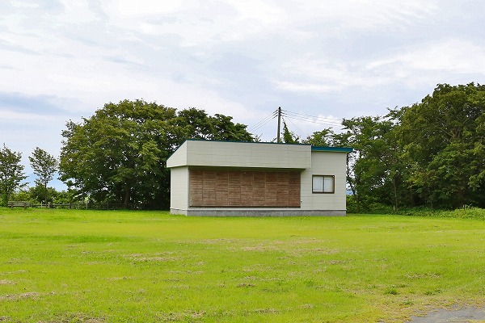
広場の片隅にはステージと思しき建物が建っていた。
この広場を埋め尽くす人が来るのだろうか。地蔵信仰、深い。
お次は深沢の賽の河原。
先ほどの今泉の賽の河原と十三湖を挟んで対面に位置している。
川倉賽の河原地蔵尊もそうだが、湖の畔、というのが賽の河原の定番なのだろうか。
そういえば恐山も宇曽利山湖の畔だし。
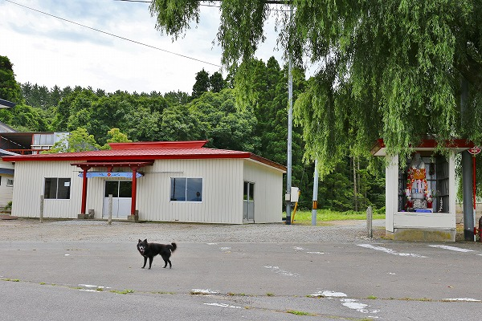
自治会館のような素っ気ない建物。
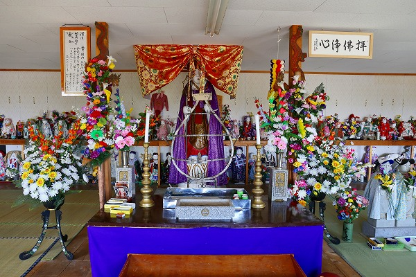
しかし内部は濃密な色彩に彩られている。
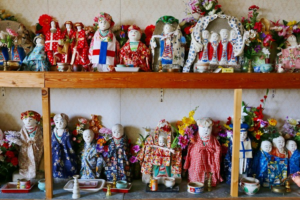
派手な着物を着たお地蔵さん。
着物が色褪せていないところを見ると毎年取り替えているのだろう。
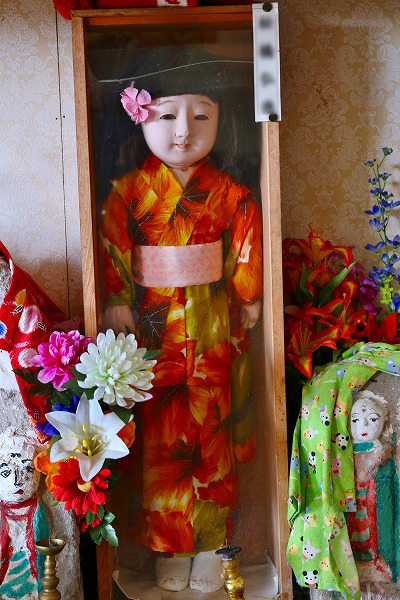
市松人形の箱には男性の名前が記されていた。
つまりあの世での架空の花嫁なのだろう。
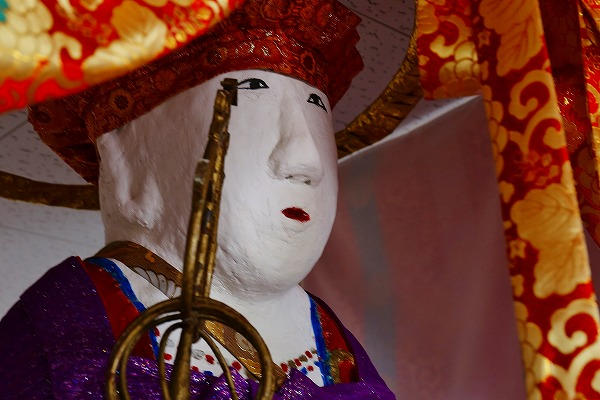
本尊のお地蔵さんも真っ白に塗られている。
文政3年の作だという。
200年近い昔の地蔵なのか。
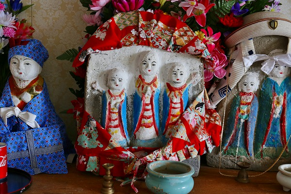
このように複数の地蔵も時折見受けられる。
これは複数の子供の供養のための地蔵だ。
事情は色々だと思うが、過去に亡くなった子供をまとめて供養する場合などに用いられる。
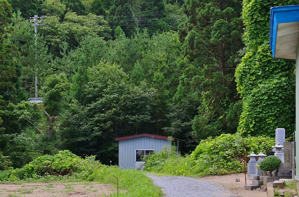
地蔵堂の裏手にさらに地味な小屋があった。
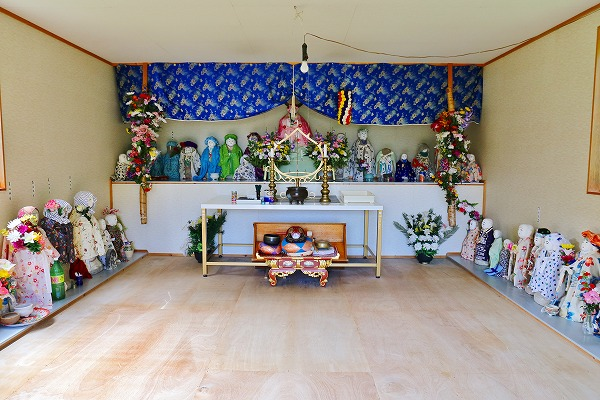
覗いてみるとこちらにもお地蔵さんがたくさんあった。
説明書きによると最初に訪れたのが地蔵堂で、ここが賽の河原なのだそうな。
お次は長坂賽の河原。
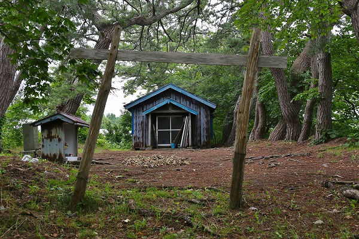
何とも雰囲気のある傾いた門（鳥居？）を潜ると…
石積みがあった。
賽の河原と言えば必ず石積みがありそうなものだが、考えてみたら今回の賽の河原巡りではここでしか石積みは見なかったような気がする。
あまり石積みは重要視されていないのかな。
等間隔に並んだ13の石積み。最初土葬の墓かと思っちゃいましたよ。
で、地蔵堂の中へお邪魔しますよ、っと。
堂内はかなり暗い。
奥の方など足元がほとんど見えないレベルだ。
先程訪れた今泉や深沢の明るくあっけらかんとした雰囲気とはかなり異なる。
無言でこちらを見る地蔵の群れの圧力に思わず後ずさりしそうになる。
今回訪れた賽の河原の中では抜群に賽の河原っぽい賽の河原だった。
最後に賽の河原ではないのだが、川倉賽の河原同様、婚礼人形が奉納されている弘法寺に行ってみる。
ここは西の高野山と呼ばれており、川倉賽の河原同様、大量の婚礼人形が奉納されている。
基本的に奉納した人以外は入れないのだが許可を頂いて入れて貰った。
ここにも大量の婚礼人形が並んでいた。
人形だけでなく、遺影も多く奉納されている。
この寺は婚礼人形奉納の発祥の寺だという。
住職の話では最初に奉納されたのは昭和30年代だとか。
最初は戦死した子供の供養のために花嫁人形の代わりとして角巻人形などの仰度人形が用いられていた。
それが時代が下るにつれ婚礼人形に変化していったのだそうな。
婚礼人形は比較的高価なので中には市販の玩具が奉納されていたりもする。
そしてもちろんセーラームーンの人形も奉納されている。
これは（多分）同じ人が次々と奉納した人形だ。
あの世でもたくさん友達に恵まれて欲しい、という願いからこのようにたくさんの人形を奉納したと思われる。
人形には一体一体名前が付けられている。
その過剰なまでの親心に思わず胸が熱くなってしまいましたよ…。
様々な死者供養、特に子供の供養に重きを置いて津軽を巡ってみると、改めてこの地方の子に対する親の思いが濃厚である事に気づかされる。
きっと情の深い土地柄なのだろう。
そして生と死が常に隣り合わせにあった厳しい土地だったのだろう。
一見ギョッとする光景だが、そこには厳しい風土と熱い人情が隠されているのだ。
2018.08.
珍寺大道場 HOME